FontEditor简介
FontEditor是一款在线字体编辑器软件， 能够打开本地或者远程的ttf|woff|eot格式的字体文件， 能够导入和导出ttf|woff|eot|svg格式的字体文件， 提供字形的编辑和轮廓编辑功能，提供字体的实时预览功能。
FontEditor支持的浏览器：chrome，safari，firefox，IE10+(仅能预览)
字形信息
一个ttf字体文件包含多个字形，单个字形包含以下信息：
- 字形轮廓，单个轮廓由线段和二次贝塞尔曲线组成，多个轮廓组成一个字形。
- unicode，码元，一个字形可以对应多个unicode码元，但一个unicode码元只能对应一个字形
- name，字形名称
- leftSideBearing，左边距，字形左侧的留白
- rightSideBearing，右边距，字形右侧的留白
字体信息
字体信息包含字体的family,subfamily,version等信息，可以在`设置`->`字体信息`中设置相关的项目。
常用的字体信息包括以下几个：
- fontFamily，字体家族，如：arial, Microsoft Yahei
- fontSubFamily，子字体家族，如：bold, bold-italic
- version，字体版本
- unitsPerEm，em框大小，em框越大字体越精细
- lowestRecPPEM，最小可读尺寸，字体最小可辨认的大小(像素)
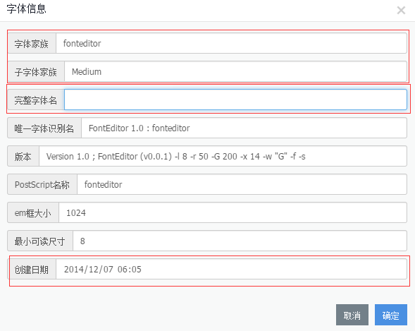
字体度量
在字体显示或印刷时需要参考字体度量信息来排版文字。通过设置上升、下降、行间距来调整文字垂直方向的距离。
设置上标、下标、删除线可以调整上标、下标、删除线的位置和样式。
其他设置请参考[OS/2]。
在`设置`->`字体度量`中设置相关的项目。

新建|打开 ttf字体文件
点击`新建`按钮，创建新的项目，点击`打开`按钮打开ttf|woff格式字体文件。
点击`保存项目`按钮，保存当前项目。
点击左侧`项目列表`打开保存的项目。
点击左侧选中项目中的`另存为`按钮，保存项目副本。
点击左侧选中项目中的`删除`按钮，删除当前项目。
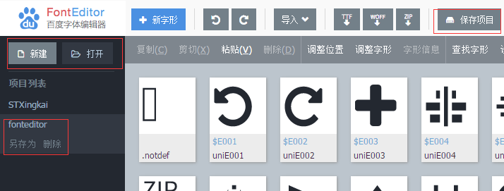
导出|预览 字体文件
点击`导出ttf`按钮，导出ttf格式文件。
点击`导出woff`按钮，导出woff格式文件。
点击`导出zip`按钮，导出包含ttf|woff|svg|eot文件的压缩包。
点击`预览`按钮，预览当前正在编辑的项目，chrome仅支持预览ttf|woff格式字体，safari支持预览svg字体，IE10+支持预览eot字体。
注意：FontEditor为纯前端字体编辑器，处理字形个数超过3000个的项目时会超出脚本执行时间，导致导出失败，因此需要注意编辑超多字形时，请使用FontCreator等桌面软件。
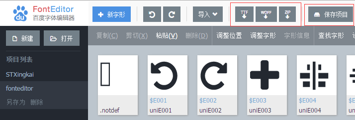
编辑字形列表
选中字形
在主面板区域显示本字体项目的字形列表，列表上方的工具栏显示可以进行的操作。
字形列表第一个项目为`.notdef`缺失字形，如果排版过程中unicode没有对应的字形，则使用缺失字形替代，因此第一个字形为特殊字形，不能随意删除。
点击单个字形可以设置 `选中`、`不选` 状态。
在主面板区域可以拖选字形，拖动过程中按住`shift`键增加选中的字形，按住`ctrl`键去除已选中的字形。
按`esc`键取消选中的字形。
按`delete`键删除选中的字形。
按`←`，`→`，分别向左，向右移动选中的字形，这样可以对字形列表重新排序。
按`ctrl+Z`，撤销对字形列表所做的更改。
按`ctrl+Y`，恢复对字形列表所做的更改。
颜色为浅绿色的字形为复合字形，FontEditor编辑器暂不支持复合字形的编辑。

主面板工具栏
在主面板上方的工具栏中可以对选中的字形进行操作。
点击`调整位置`按钮打开调整位置对话框，对字形的左边距、右边距、基线偏移进行设置，如果没有选中的字形，则默认操作所有字形。
点击`调整字形`按钮打开调整字形对话框，
选中`镜像`，`翻转`，对字形进行`镜像`，`翻转`设置；填写`按比例缩放`对字形按比例进行缩放；
填写`缩放字形到上下边界`对字形调整上下边界（此处设置可以调整字形到统一高度，在字形高度需要调整到一致时可以使用）；
如果没有选中的字形，则默认操作所有字形。
点击`查找字形`按钮，打开查找字形对话框，输入要查找的unicode，查找后，会选中找到的字形。
点击`设置代码点`按钮，打开设置代码点对话框，可以设置起始代码点为`ascii`或者`unicode private data`开头的unicode码，
选中的字形会自动填充unicode代码点和字形名称，如果没有选中的字形，则默认操作所有字形。
导入字形
FontEditor支持ttf|woff|svg字体文件的导入，支持单个svg字形的导入。
导入字体文件
点击`导入`->`导入字体文件`按钮，从本地导入ttf|woff字体文件，可以一次导入多个字体文件，如果文件较大的话，建议分批导入，导入的字形在主面板显示。
点击`导入`->`在线字体`按钮，从字体库中导入所需的字体。
点击`导入`->`字体URL`按钮，输入线上字体URL，可以导入线上字体。
导入svg字形
点击`导入`->`导入svg`按钮，可以导入本地svg文件，支持svg字体和svg格式字形，可一次导入多个svg文件。
FontEditor会对svg做字形转换，有些svg命令转换成轮廓会导致失真，需要导入后做调整。FontEditor会对常用的svg命令做转换处理，如果有不支持的命令，则需要手动调整字形。
导入图片
点击`导入`->`导入图片`按钮，可以导入本地图片。
点击`选择图片`按钮，打开需要导入的图片，图片应在适当大小，并且对比度比较高，否则导入处理会比较慢，或者效果不理想。
点击`从URL导入图片`按钮，输入图片URL按回车，导入在线图片。
图像面板左侧为图片分离出来的原始轮廓，右侧为拟合后的字形轮廓，右侧的轮廓为最终导入的字形轮廓。
点击右上角`适应窗口`对面板进行缩放适应窗口，点击`查看原图`、`查看轮廓`按钮，分别查看原图和轮廓。
预处理选项可以对图片进行简单的预处理。
点击`反转`按钮反转图像，拖动`高斯平滑`滑块对图像边界进行平滑处理，拖动`对比度`滑块调整图像对比度，点击`恢复`按钮恢复预处理。
轮廓选项可以对提取的轮廓进一步加工。
拖动`二值化阈值`滑块调整二值化后的轮廓，向左拖动减少细节，向右拖动增加细节，预设的阈值可以辅助筛选轮廓。 点击`消除杂点`按钮消除二值化后的杂点，点击`消除孔洞`按钮消除二值化后的孔洞， 点击`膨胀`按钮膨胀轮廓，点击`腐蚀`按钮腐蚀轮廓，点击`恢复`恢复轮廓处理。
点击`确定`按钮确定导入轮廓。
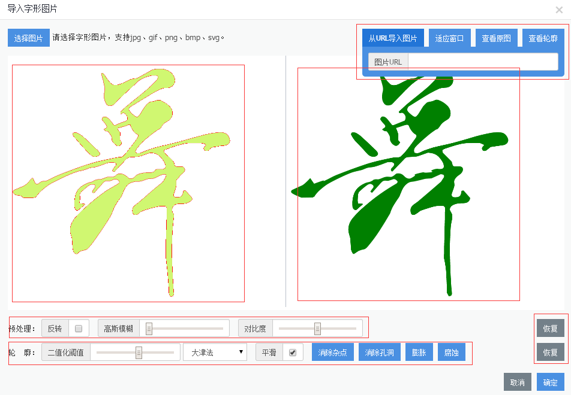
从Adobe Illustrator导出字形
在Adobe Illustrator中编辑字形完毕之后，选择`存储为web和设备所用格式`，在导出选项中选择svg，勾选`转化为轮廓`，然后导出，这样导出的svg可以更好的被FontEditor识别。
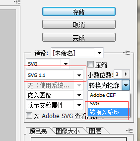
注意：FontEditor导入字形默认会合并多个`path`为一个字形，若要设置一个`path`对应一个字形，在`设置`->`导入和导出`中取消`导入svg文件时合并成单个字形`勾选。
对于非`path`标签，如ellipse，polygon 在导入的时候合并为一个字形
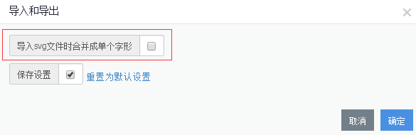
编辑字形轮廓
进入编辑轮廓模式
在主面板，鼠标移动到要编辑的字形上面，右上角出现`编辑`图标，点击图标打开字形编辑器。
在主面板，按`F2`键，打开或关闭字形编辑器。
字形编辑器
在字形编辑器中，字形右侧的蓝线为`rightSideBearing`右边距线，拖动右边距线，设置字形的右边距。
在字形编辑器中，上边缘刻度线为水平刻度线，左边缘刻度线为垂直刻度线，刻度线单位为`point`。
在字形编辑器中，红色辅助线为测量线，从上到下依次为：
- `ascent`，所有字形的上边缘，原则上字形上边缘不超过`ascent`
- `capHeight`大写H高度
- `xHeight`小写x高度
- `baseline`基线，字形排版的基准线
- `descent`下边缘，所有字形的下边缘，原则上字形下边缘不超过`descent`
编辑字形
在字形编辑器中，点击轮廓选中要编辑的轮廓，按住`ctrl`键选中，不选轮廓。
在字形编辑器中，按`delete`键删除选中的轮廓。
在字形编辑器中，按`←`，`→`，`↑`，`↓`键左移、右移、上移、下移选中的轮廓。
在字形编辑器中，拖动选中的轮廓到指定的位置，拖动过程中出现的绿色线条为吸附线条，会将拖动的轮廓对齐到其他轮廓或`辅助线`。
若要设置吸附选项，点击`设置`->`编辑器`打开编辑器选项，设置吸附到网格线或者轮廓。
在字形编辑器中，按住`ctrl`+`alt`键，同时拖动轮廓，可复制选中的轮廓。
字形变换
在字形编辑器中，右键选中轮廓，点击`变换`中的项目，对轮廓做相应变换。
在字形编辑器中，拖动选择框上的8个小方框改变轮廓大小，按住`shift`拖动，改变轮廓形状。
在字形编辑器中，点击已选中的轮廓进入倾斜变换模式，拖动小方块，旋转和倾斜轮廓。
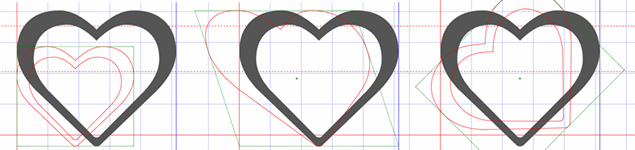
编辑单个轮廓
在字形编辑器中，双击单个轮廓，或选中轮廓，在工具栏中单击`点模式`按钮进入单个轮廓编辑模式。
拖动单个点改变轮廓形状。
右键打开轮廓点编辑菜单，可以进行如下操作：
点击`添加点`在当前点后面和下一个点前面插入一个轮廓上的点。
点击`删除点`删除当前点。
点击`在曲线上`设置当前的点在曲线上。
点击`远离曲线`设置当前的点远离曲线。
点击`作为开始点`设置当前的点作为曲线开始点。
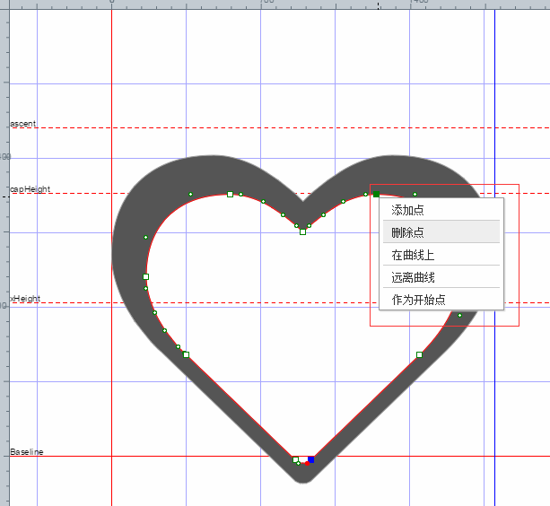
字形编辑器工具栏
在字形编辑器中，点击`点模式`按钮，将选中的轮廓进入点模式编辑。
在字形编辑器中，点击`上移一层`按钮，将选中的轮廓上移一层。
在字形编辑器中，点击`下移一层`按钮，将选中的轮廓下移一层。
在字形编辑器中，点击`改变方向`按钮，改变选中的轮廓为顺时针或者逆时针。
在字形编辑器中，点击`左对齐`按钮，将选中的轮廓左侧对齐到左边距。
在字形编辑器中，点击`居中对齐`按钮，将选中的轮廓中心对齐到左边距和右边距中间。
在字形编辑器中，点击`右对齐`按钮，将选中的轮廓右侧对齐到右边距。
在字形编辑器中，点击`顶端对齐`按钮，将选中的轮廓上侧对齐到字体上边缘。
在字形编辑器中，点击`居中对齐`按钮，将选中的轮廓中间对齐到字体上边缘和下边缘中间。
在字形编辑器中，点击`底端对齐`按钮，将选中的轮廓底部对齐到字体下边缘。
在字形编辑器中，点击`基线对齐`按钮，将选中的轮廓底部对齐到基线。
在字形编辑器中，点击`向左旋转`按钮，将选中的轮廓逆时针旋转90度。
在字形编辑器中，点击`向右旋转`按钮，将选中的轮廓顺时针旋转90度。
在字形编辑器中，点击`翻转`按钮，将选中的轮廓做翻转操作。
在字形编辑器中，点击`镜像`按钮，将选中的轮廓做镜像操作。
在字形编辑器中，点击`切割轮廓`按钮，进入切割轮廓模式，拖出切割线完成对轮廓的切割。
在字形编辑器中，点击`合并轮廓`按钮，合并选中的轮廓。
在字形编辑器中，点击`相交轮廓`按钮，将选中的轮廓取交集。
在字形编辑器中，点击`相切轮廓`按钮，将选中的轮廓取相切。
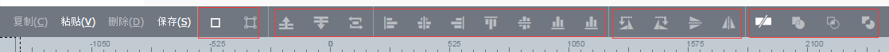
右键菜单
在字形编辑器中，右键空白区域打开右键菜单。
点击`添加路径`按钮进入添加路径模式。
点击`添加形状`按钮添加指定形状到字形中。
点击`字形信息`按钮打开字形信息对话框，可以对当前编辑的字形设置字形信息。
点击`重置缩放`按钮将形状缩放到视窗中央。
点击`保存`按钮保存当前形状到形状列表，保存之后的字形会以蓝色标识。
注意：保存形状到字形列表，不会保存当前项目，若要保存此次修改到本地，请点击顶部菜单`保存项目`或者点击字形列表任意区域后按`ctrl + S`保存项目。
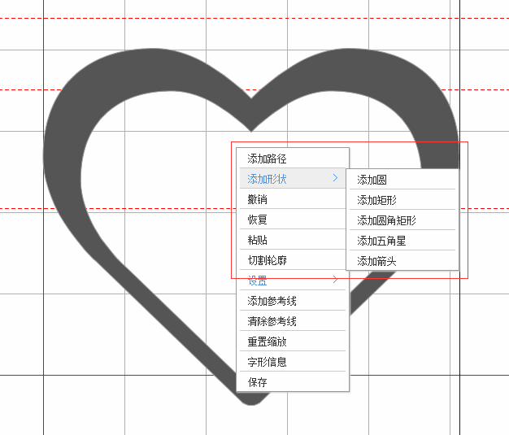
在字形编辑器中，选择多个轮廓后右键，打开右键菜单。
点击`对齐形状`->`左对齐`按钮，对选中的轮廓对齐到左侧。
点击`对齐形状`->`居中对齐`按钮，水平对齐选中的轮廓。
点击`对齐形状`->`右对齐`按钮，对选中的轮廓对齐到右侧。
点击`对齐形状`->`顶部对齐`按钮，对选中的轮廓对齐到顶部。
点击`对齐形状`->`中间对齐`按钮，垂直对齐选中的轮廓。
点击`对齐形状`->`底部对齐`按钮，对选中的轮廓对齐到底部。
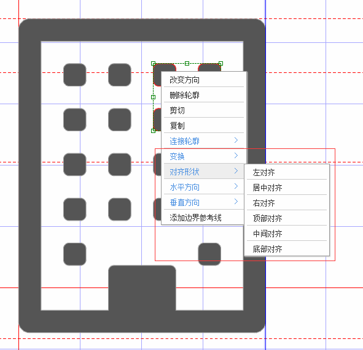
创建辅助线
在字形编辑器中，拖动上边缘和左边缘，会拖出水平、垂直参考线。
在字形编辑器中，右键空白区域，点击`添加参考线`创建水平和垂直参考线。
在字形编辑器中，右键选中的轮廓，点击`添加边界参考线`创建轮廓边界参考线。
查找字形
在主面板工具栏中，点击查找字形，打开查找字形对话框，默认`按代码点查找字形`，输入要查找的unicode，找到的字形会被选中，未找到字形，则不作任何改变。
选择`按名字查找字形`，输入字形名称，按名称查找到相应的字形，找到的字形会被选中，未找到字形，则不作任何改变。
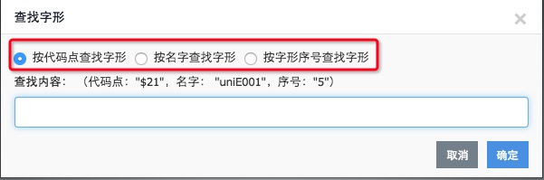
编辑器设置
点击`设置`->`编辑器设置`打开编辑器设置对话框
填写字体列表颜色、大小、个数，设置字体列表外观。
填写网格线以及度量线设置，改变网格线和度量线。
勾选`保存设置`，保存当前设置，若不勾选则仅对当前窗口有效。
点击`重置为默认设置`按钮，将设置重置为默认值。
点击`确定`按钮，设置生效。
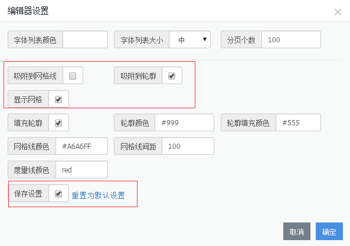
快捷键
主面板快捷键
- `F2`，打开/关闭字形编辑器
- `delete`，删除选中字形
- `ctrl + A`，全选字形
- `ctrl + C`，复制选中字形
- `ctrl + X`，剪切选中字形
- `ctrl + V`，粘贴选中字形
- `←`，在列表模式中，左移选中字形，在字形编辑模式中，编辑上一个字形
- `→`，在列表模式中，右移选中字形，在字形编辑模式中，编辑下一个字形
- `ctrl + Z`，撤销字形列表操作
- `ctrl + Y`，恢复字形列表操作
- `ctrl + S`，保存当前项目
字形编辑器快捷键
- `delete`，删除选中轮廓
- `ctrl + A`，全选轮廓
- `ctrl + C`，复制选中轮廓
- `ctrl + X`，剪切选中轮廓
- `ctrl + V`，粘贴选中轮廓
- `esc`，取消选中轮廓
- `ctrl + Z`，撤销轮廓操作
- `ctrl + Y`，撤销轮廓操作
- `ctrl + S`，保存当前字形到字形列表
- `双击轮廓`，进入轮廓编辑模式
- `ctrl + alt + 拖动`，复制选中轮廓
- `ctrl + 拖动`，沿X轴拖动选中轮廓
- `alt + 拖动`，沿Y轴拖动选中轮廓
- `ctrl + 点击轮廓`，选择/不选轮廓
- `shift + 滚轮`，水平移动字形
- `滚轮`，垂直移动字形
- `space + 拖动`，移动字形
- `ctrl|alt + 滚轮`，缩放视窗
- `ctrl|alt + '+'`，放大视窗
- `ctrl|alt + '-'`，缩小视窗